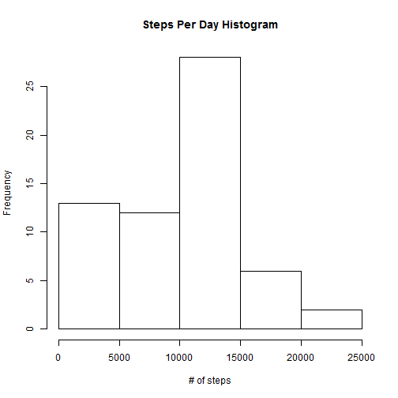
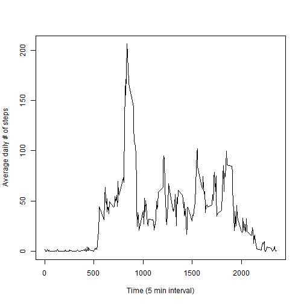
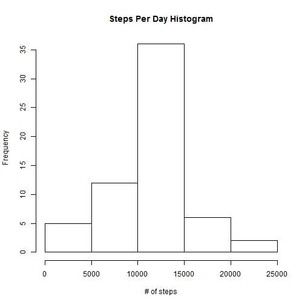
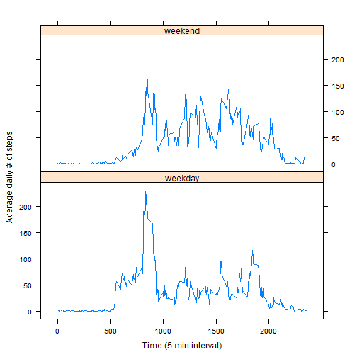

This report answers a variety of questions from data associated with a personal activity monitoring device. The data consists of two months of data from an anonymous individual collected during the months of October and November, 2012 and include the number of steps taken in 5 minute intervals each day.
First, read the data file. Note that, as per assignment instructions, the file is not actaully downloaded.
activity <- read.csv("activity.csv")
Process data using the plyr package to summarise it for this analyis.
library("plyr")
activity1 <- ddply(activity, .(date), summarise, sum_steps=sum(steps, na.rm=TRUE))
activity2 <- ddply(activity, .(interval), summarise, average=mean(steps, na.rm=TRUE))
Histogram:
hist(activity1$sum_steps, main="Steps Per Day Histogram", xlab="# of steps")

Table:
act_mean <- mean(activity1$sum_steps, na.rm=TRUE)
act_median <- median(activity1$sum_steps, na.rm=TRUE)
The mean number of steaps per day is 9354.2295 and median is 10395.
Time series plot:
plot(activity2$interval, activity2$average, type="l", xlab="Time (5 min interval)", ylab="Average daily # of steps")

max_interval <- activity2$interval[which.max(activity2$average)]
The interval that, on average, had the most # of steps was 835.
There are 2304 missing values in the data set. To ensure this does not introduce bias into summary calculations, these values will be replaced with the mean value for that 5 minute interval.
First, merge the mean for each interval into the original data set:
activity <- merge(activity2,activity)
Then, using subsetting, replace the NA values with the average and update the aggregate table:
activity$steps[is.na(activity$steps)] <- activity$average[is.na(activity$steps)]
activity1 <- ddply(activity, .(date), summarise, sum_steps=sum(steps, na.rm=TRUE))
Now, generate another histogram:
hist(activity1$sum_steps, main="Steps Per Day Histogram", xlab="# of steps")

Table:
act_mean <- mean(activity1$sum_steps, na.rm=TRUE)
act_median <- median(activity1$sum_steps, na.rm=TRUE)
After replacement of the NA values, the mean number of steaps per day is 1.0766 × 104 and median is 1.0766 × 104.
This has raised the mean and median number of steps per day, and also changed the histogram by increasing the number of days with more steps and decreasing the number of days with fewer steps.
First, add a weekday factor to the data set, and summarise this:
activity$weekday <- as.factor(ifelse(weekdays(as.Date(activity$date)) %in% c("Saturday", "Sunday"), "weekend","weekday"))
activity2 <- ddply(activity, .(interval, weekday), summarise, average=mean(steps, na.r=TRUE))
Now, build panel plot using the lattice package with this factor:
library(lattice)
xyplot(average ~ interval | weekday,data = activity2, layout=c(1,2),type="l", xlab="Time (5 min interval)", ylab="Average daily # of steps")
